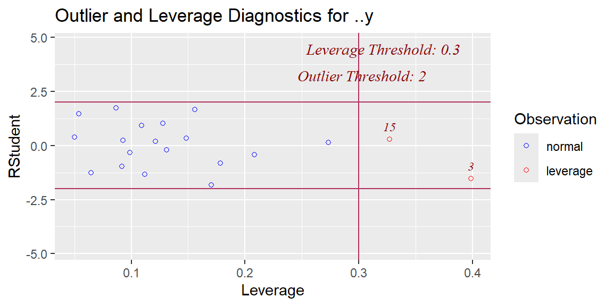
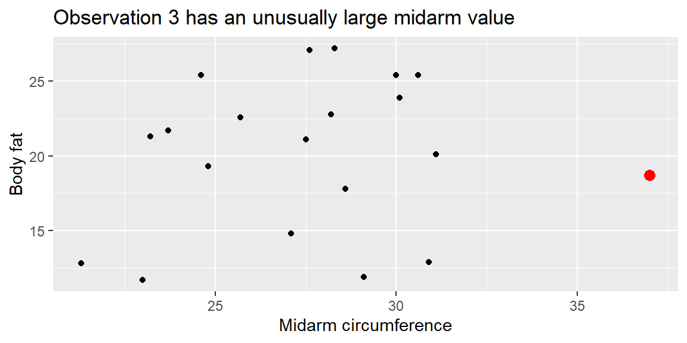
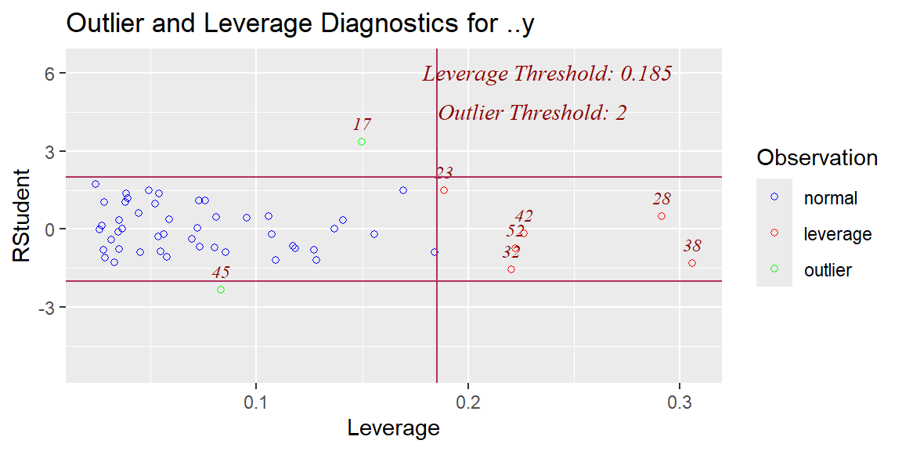
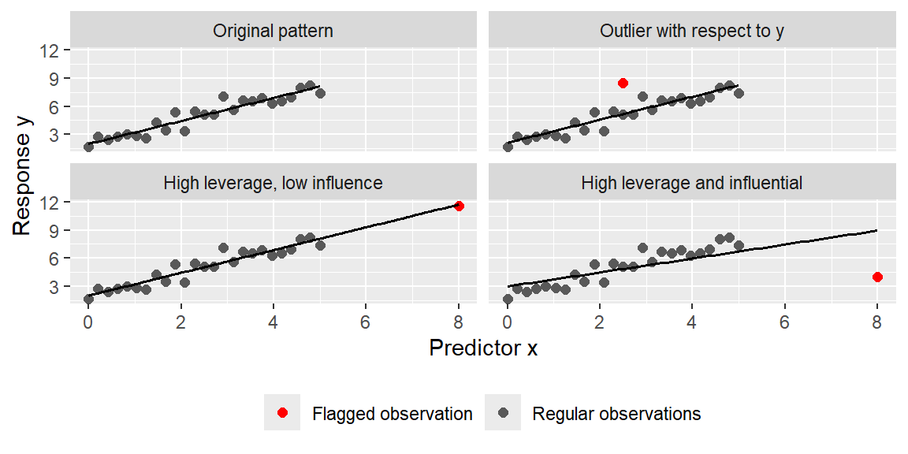

“Be approximately right rather than exactly wrong.” - John Tukey
20.1 Outliers with Respect to the Response Variable
In Chapter 8 we discussed outliers in the simple regression case.
Recall that a point can be outlying with respect to \(y\) or with respect to \(x\) but have little effect on the fitted line.
If an observation is outlying with respect to \(y\) but has an \(x\) value close to \(\bar{x}\), then it will have little effect on \(\hat{y}\). If it is far from \(\bar{x}\), it will have a large effect.
If an observation is an outlier with respect to \(x\) but still follows the linear relationship between \(x\) and \(y\), then it will also have little effect on \(\hat{y}\).
In multiple regression, we will still need to view the outliers with respect to \(y\) and with respect to the predictor variables \(x_1,\ldots,x_{p-1}\). We will identify these outlying observations by how they affect the fitted model \(\hat{y}\).
NoteOutlying, high leverage, and influential are different ideas
It is useful to separate three related but different ideas.
Idea
What is unusual?
Main diagnostic
Outlier with respect to \(y\)
The response value is far from what the model predicts.
Studentized or studentized deleted residuals
High leverage observation
The predictor values are far from the center of the predictor space.
Hat value, \(h_{ii}\)
Influential observation
Removing the observation noticeably changes fitted values or coefficients.
DFFITS, Cook’s distance, DFBETAS
An observation can have high leverage without being influential, and an observation can have a large residual without changing the fitted model much. The most concerning observations are often those that combine unusual predictor values with a large residual.
20.2 Studentized Residuals
Recall from Chapter 7 that semistudentized residuals \[
\begin{align*}
e_{i}^{*} & =\frac{e_{i}}{\sqrt{MSE}}
\end{align*}
\] can be used to determine if an observation is an outlier.
We called them semistudentized because \(\sqrt{MSE}\) is not an estimate of the true standard error of \(e_i\). Therefore dividing by \(\sqrt{MSE}\) does not give a true student t-score.
With the hat matrix \[
\begin{align*}
{\bf H} & ={\bf X}\left({\bf X}^{\prime}{\bf X}\right)^{-1}{\bf X}^{\prime}
\end{align*}
\] we can now present the true variance of \(e_i\): \[
\begin{align}
Var\left[e_{i}\right] & ={\sigma^{2}\left(1-h_{ii}\right)}
\end{align}
\tag{20.1}\] where \(h_{ii}\) is the \(i\)th diagonal element of \(\bf{H}\).
We can estimate \(Var\left[e_{i}\right]\) with \[
\begin{align}
s^2\left[e_{i}\right] & =MSE\left(1-h_{ii}\right)
\end{align}
\tag{20.2}\]
Dividing \(e_i\) by \(s\left[e_{i}\right]\) gives us a true t-score. Thus the studentized residual is \[
\begin{align}
r_{i} & =\frac{e_{i}}{\sqrt{MSE\left(1-h_{ii}\right)}}
\end{align}
\tag{20.3}\]
A rule of thumb is that any \(r_i\) greater than 3 in absolute value should be considered an outlier with respect to \(y\).
20.3 Deleted Residuals
As we stated above, it is possible for an observation to be outlying with respect to \(y\) but not have an effect on the fitted value.
Also, if \(y\) does affect the fit greatly, then the fitted value \(\hat{y}\) will be “pulled” toward \(y\) and thus make \(r_i\) not so large.
One way to see how a potentially outlying observation \(y_i\) influences the fit is by first fitting the model without \(y_i\) and then trying to predict \(y_i\) based on that fitted model.
The difference between the observed \(y_i\) and the predicted value based on the model fitted with the remaining \(n-1\) observations \(\hat{y}_{i(i)}\) is called the deleted residual: \[
\begin{align}
d_{i} & =y_{i}-\hat{y}_{i\left(i\right)}
\end{align}
\tag{20.4}\]
At first glance, it would appear that obtaining \(d_i\) for all observations would be computationally expensive since it would require a different fitted model for each \(i=1,\ldots,n\). However, it can be shown that the deleted residuals can be expressed as \[
\begin{align}
d_{i} & =\frac{e_{i}}{1-h_{ii}}
\end{align}
\tag{20.5}\] which would not require a new fit for each \(i\).
20.4 Studentized Deleted Residuals
The estimated variance of the deleted residual \(d_{i}\) is \[
\begin{align}
s^{2}\left[d_{i}\right] & =\frac{MSE_{(i)}}{1-h_{ii}}
\end{align}
\tag{20.6}\] where \(MSE_{(i)}\) is the \(MSE\) of the fit with \(y_{i}\) removed.
We can obtain a studentized deleted residual with \[
\begin{align}
t_{i} & =\frac{d_{i}}{s\left[d_{i}\right]}\nonumber\\
& =\frac{e_{i}}{\sqrt{MSE_{(i)}\left(1-h_{ii}\right)}}
\end{align}
\tag{20.7}\]
Again, we do not need to calculate a new regression fit for each \(i\) due to the relationship \[
\begin{align}
MSE_{(i)} & =\left(\frac{n-p}{n-p-1}\right)MSE-\frac{e_{i}^{2}}{\left(n-p-1\right)\left(1-h_{ii}\right)}
\end{align}
\tag{20.8}\]
Since \(t_{i}\) follows a Student’s \(t\) distribution with \(n-p-1\) degrees of freedom, then any \(t_{i}\) greater than \(t_{\alpha/(2n)}\) in absolute value will be considered a potential outlier.
Note that the \(\alpha/2n\) is called a Bonferroni adjustment in that it divides the significance level \(\alpha\) by \(2n\). This is done to control for an overall significance level of \(\alpha\) when examining the \(n\) studentized deleted residuals.
20.5 Outliers with Respect to the Predictor Variables
We can identify outliers with respect to the predictor variables with the help of the hat matrix \({\bf H}\).
We have already seen that it plays an important role in the studentized deleted residuals.
We will now use the diagonal elements of \({\bf H}\), \(h_{ii}\), as a measure of how far the \(x\) values of an observation are from the center \(x\) value of all the observations.
20.5.1 Leverage Values
We first note some properties of \(h_{ii}\): \[
\begin{align}
& 0\le h_{ii}\le1 &\\
& \sum h_{ii}=p &
\end{align}
\tag{20.9}\]
The larger the value of \(h_{ii}\), the farther the \(i\)th observation is from the center of all the \(x\)’s. Thus, we call \(h_{ii}\) the leverage. If an observation has a large leverage value, then it has a substantial “leverage’’ in determining \(\hat{y}_{i}\).
Leverage values greater than \(2p/n\) are considered large when \(n\) is reasonably large.
NoteWhy the guideline uses 2p/n
Because \(\sum h_{ii}=p\), the average leverage value is \(p/n\). The guideline \(2p/n\) flags observations with leverage at least twice the average. This is only a screening rule; it tells us which observations deserve attention, not which observations must be deleted.
20.5.2 Using Leverage to Identify Hidden Extrapolation
In simple regression, we stated that we did not want to extrapolate outside the range of the \(x\) variable.
In multiple regression, we still do not want to extrapolate but now we cannot just think in terms of the range of each individual predictor variable. We must now think in terms of extrapolating for combinations of the \(x\) variables that we may not have seen information for in our data.
For example in the bodyfat data, tri had a range of about 14 to 32. The variable thigh had a range of values from about 42 to about 58.5. However, we did not have any observations with a tri of, say, 16 and a thigh of, say, 55. Those with small tri values also tended to have small thigh values. So this would be hidden extrapolation.
We can use the hat matrix to identify hidden extrapolation. This is done by using the vector of \(x\) values you want to predict at, \({\bf X}_{new}\), and then including it in the hat matrix as \[
\begin{align}
h_{new,new} & ={\bf X}_{new}^{\prime}\left({\bf X}^{\prime}{\bf X}\right)^{-1}{\bf X}_{new}
\end{align}
\tag{20.10}\]
If the value of \(h_{new,new}\) is much larger than the leverage values in the data set, then it indicates extrapolation.
20.6 Influential Cases
Once we have identified observations that are outlying with respect to \(y\) or with respect to predictor variables, or both, we now want to know just how much it affects the fitted regression model.
If an observation causes major changes in the fitted model when excluded, then we say the observation is influential.
Not all outliers are influential. We will determine which are influential by seeing what happens to the fitted values when that observation is deleted as we did with the deleted residuals above.
20.6.1 Influence on a Single Fitted Value
We can see how much influence an observation has on a single fitted value \(\hat{y}_{i}\) by examining \[
\begin{align}
DFFITS_{i} & =\frac{\hat{y}_{i}-\hat{y}_{i\left(i\right)}}{\sqrt{MSE_{(i)}h_{ii}}}
\end{align}
\tag{20.11}\]
As before, a new regression fit is not needed to obtain \(DFFITS_{i}\). It can be shown that Equation 20.11 can be expressed as \[
\begin{align}
DFFITS_{i} & =t_{i}\left(\frac{h_{ii}}{1-h_{ii}}\right)^{1/2}
\end{align}
\tag{20.12}\] which does not require a new regression fit excluding the \(i\)th observation.
A general guideline is that a value of DFFITS greater than 1 in absolute value for small to medium datasets and greater than \(2\sqrt{p/n}\) in absolute value for large datasets indicates an influential observation.
20.6.2 Influence on All Fitted Values
We can consider the influence of the \(i\)th observation on all the fitted values \(\hat{y}_{i}\) with a measure known as Cook’s distance.
It is defined as \[
\begin{align}
D_{i} & =\frac{\sum_{j=1}^{n}\left(\hat{y}_{j}-\hat{y}_{j\left(i\right)}\right)^{2}}{pMSE}\\
& =\frac{e_{i}^{2}}{pMSE}\left(\frac{h_{ii}}{\left(1-h_{ii}\right)^{2}}\right)
\end{align}
\tag{20.13}\]
Note the last expression in Equation 20.13 does not require a new fitted regression model for each \(i\).
From Equation 20.13, we see that \(D_{i}\) depends on \(e_{i}\) and \(h_{ii}\). If either one is large, then \(D_{i}\) will be large.
So an influential observation can have a
large residual \(e_{i}\) and a moderate leverage \(h_{ii}\),
a large leverage \(h_{ii}\) and a moderate residual \(e_{i}\),
or both a large residual and large leverage.
ImportantInfluence is a diagnostic, not an automatic delete button
An influential observation should be investigated. It may be a data-entry error, a case from a different population, or a perfectly valid observation that teaches us something important about the relationship. Removing an observation should be justified by context, not only by a large diagnostic value.
One good practice is a sensitivity analysis: fit the model with and without the flagged observation and report whether the substantive conclusions change.
20.6.3 Influence on the Coefficients
We can also see the influence of an observation on the individual coefficients \(\hat{\beta}_{k}\), \(k=0,1,\ldots,p-1\). Again, we do this by seeing how much \(\hat{\beta}_{k}\) changes when that observation is removed.
A measure of this change is \[
\begin{align*}
DFBETAS_{k\left(i\right)} & =\frac{\hat{\beta}_{k}-\hat{\beta}_{k\left(i\right)}}{\sqrt{MSE_{(i)}c_{kk}}}
\end{align*}
\] where \(c_{kk}\) is the \(k\)th diagonal element of \(\left({\bf X}^{\prime}{\bf X}\right)^{-1}\).
The sign of \(DFBETAS\) indicates whether \(\hat{\beta}_{k}\) increases or decreases when the \(i\)th observation is removed from the data. A large magnitude of \(DFBETAS\) indicates the \(i\)th observation is influential on the \(k\)th coefficient.
A rule of thumb is a \(DFBETAS\) value greater than 1 in absolute value for small to medium datasets and greater than \(2/\sqrt{n}\) for large datasets indicates an influential observation.
Example 20.1
ExampleOutliers and influence in the bodyfat data
Let’s examine the bodyfat data and determine whether there are any observations that deserve additional attention.
We have already seen that there is an issue of multicollinearity in this data. The lasso fit in Example 19.4 showed that tri and midarm would have an important impact on bfat.
We can plot the studentized residuals versus the leverage values using the olsrr library.
library(tidyverse)library(tidymodels)library(olsrr)library(broom)bodyfat_dat<-read_table("BodyFat.txt")bodyfat_recipe<-recipe(bfat~tri+midarm, data =bodyfat_dat)bodyfat_model<-linear_reg()|>set_engine("lm")bodyfat_workflow<-workflow()|>add_recipe(bodyfat_recipe)|>add_model(bodyfat_model)bodyfat_fit<-bodyfat_workflow|>fit(data =bodyfat_dat)bodyfat_engine<-bodyfat_fit|>extract_fit_engine()bodyfat_engine|>ols_plot_resid_lev()

We see from this plot that there are no severe outliers with respect to \(y\), but there are two observations that are potential outliers with respect to the predictor variables.
It can also help to look at the diagnostic values in a table. The following code sorts the observations by Cook’s distance.
We see that observation 3, which was also high leverage, is influential to the fit. We can see which coefficients it has the largest influence on with DFBETAS.
Observation 3 has a large DFBETA value for midarm, so we say that it is influential for this coefficient. Since the DFBETA is negative, the estimated midarm coefficient becomes larger when observation 3 is removed than when observation 3 is included. To further investigate this observation, let’s make a scatterplot of bfat and midarm and highlight observation 3.
bodyfat_plot_dat<-bodyfat_dat|>mutate(observation =row_number())bodyfat_plot_dat|>ggplot(aes(x =midarm, y =bfat))+geom_point()+geom_point( data =filter(bodyfat_plot_dat, observation==3), color ="red", size =3)+labs( x ="Midarm circumference", y ="Body fat", title ="Observation 3 has an unusually large midarm value")

We see that this observation has an “average” bfat value but the midarm value is larger than any other observation. Further investigation would be needed to determine whether this is an observation that should be deleted. For example, suppose this is a subject who also lifted weights. Is this the type of subject we want to include in this population of interest? If not, then the observation can be removed. If yes, then the observation may be important to keep.
Example 20.2
ExampleChecking hidden extrapolation with hat values
Suppose we want to predict bfat for a woman in this population with tri = 19.5 and midarm = 29.
Was our model fit with combinations of these two predictors close to the values we want to predict? If so, then the hat value for this new observation, determined by Equation 20.10, should be close to the hat values of the observations that were used to fit the model. If the hat value for the new observation is much larger than the other observation hat values, then this new value is extrapolation.
The applicable library allows us to compare the hat value of a new observation to that of the observations used to fit the data.
The hat value for this observation is within the range of the hat values of the observations used to fit the model. Thus, this is not hidden extrapolation.
Let’s now try an observation with tri = 14 and midarm = 30.
This new observation has a hat value higher than any hat value of the observations used to fit the model. This indicates that this combination of the predictor variable values was not used to fit the model. Thus, this is hidden extrapolation.
Example 20.3
ExampleOutliers and influence in the surgical unit data
Let’s examine the surgical unit data first seen in Example 18.1. Recall that the predictors bcs, pindex, enzyme_test, and alc_heavy were selected for a model determined by best subsets regression. We will now check for outliers and influential observations for this model.
surgical_dat<-surgical|>mutate( ln_y =log(y))surgical_recipe<-recipe(ln_y~bcs+pindex+enzyme_test+alc_heavy, data =surgical_dat)surgical_model<-linear_reg()|>set_engine("lm")surgical_workflow<-workflow()|>add_recipe(surgical_recipe)|>add_model(surgical_model)surgical_fit<-surgical_workflow|>fit(data =surgical_dat)surgical_engine<-surgical_fit|>extract_fit_engine()surgical_engine|>ols_plot_resid_lev()

There is one clear outlier with respect to the response variable, observation 17. Examining the leverage values, we see there are five observations beyond the guideline. In a situation like this, we look for leverage values that are clearly separated from the others. There are two such values, observations 28 and 38. We will now examine these three observations in terms of influence.
Observations 17 and 38 are influential, while observation 28 is not. So observations 17 and 38 should be investigated further to determine whether they represent errors, unusual but valid cases, or cases from a different population.
The table below sorts observations by Cook’s distance.
Observation 17 is influential on the coefficients of pindex and enzyme_test. Observation 38 is influential on the coefficient of pindex and slightly influential for enzyme_test.
20.7 Putting Diagnostics into Practice
The diagnostics in this chapter are most useful when they are used together. A single large diagnostic value is a starting point for investigation, not a final decision.
Example 20.4
ExampleVisualizing outliers, leverage, and influence
The following simulated data show why outliers, leverage, and influence should not be treated as the same idea.
set.seed(1004)base_simulation<-tibble( x =seq(0, 5, length.out =25), y =2+1.2*x+rnorm(25, sd =0.6), point_type ="Regular observations")diagnostic_simulation<-bind_rows(base_simulation|>mutate(panel ="Original pattern"),base_simulation|>mutate(panel ="Outlier with respect to y"),tibble( x =2.5, y =8.5, point_type ="Flagged observation", panel ="Outlier with respect to y"),base_simulation|>mutate(panel ="High leverage, low influence"),tibble( x =8, y =2+1.2*8, point_type ="Flagged observation", panel ="High leverage, low influence"),base_simulation|>mutate(panel ="High leverage and influential"),tibble( x =8, y =4, point_type ="Flagged observation", panel ="High leverage and influential"))|>mutate( panel =factor(panel, levels =c("Original pattern","Outlier with respect to y","High leverage, low influence","High leverage and influential")))diagnostic_simulation|>ggplot(aes(x =x, y =y, color =point_type))+geom_point(size =2)+geom_smooth(method ="lm", se =FALSE, color ="black", linewidth =0.7)+facet_wrap(~panel, nrow =2)+scale_color_manual( values =c("Flagged observation"="red","Regular observations"="gray35"))+labs( x ="Predictor x", y ="Response y", color =NULL)+theme(legend.position ="bottom")

The vertical outlier has an unusual response value but is near the middle of the predictor values. The high-leverage, low-influence point is far out in the predictor direction but follows the existing linear trend. The most concerning case is the high-leverage and influential point, because it is far from the center of the predictor values and pulls the fitted line toward itself.
Example 20.5
ExampleSensitivity analysis for influential surgical observations
In Example 20.3, observations 17 and 38 were flagged as influential. One way to investigate their effect is to refit the model without those observations and compare the estimated coefficients.
surgical_flagged<-c(17, 38)surgical_with_observation<-surgical_dat|>mutate(observation =row_number())surgical_without_flagged<-surgical_with_observation|>filter(!observation%in%surgical_flagged)surgical_without_flagged_fit<-lm(ln_y~bcs+pindex+enzyme_test+alc_heavy, data =surgical_without_flagged)surgical_sensitivity<-bind_rows(tidy(surgical_engine)|>mutate(analysis ="All observations"),tidy(surgical_without_flagged_fit)|>mutate(analysis ="Without observations 17 and 38"))|>select(analysis, term, estimate)|>pivot_wider(names_from =analysis, values_from =estimate)|>mutate( change =`Without observations 17 and 38`-`All observations`)surgical_sensitivity|>knitr::kable(digits =4)
term
All observations
Without observations 17 and 38
change
(Intercept)
3.8527
3.8300
-0.0227
bcs
0.0733
0.0756
0.0023
pindex
0.0142
0.0113
-0.0029
enzyme_test
0.0154
0.0179
0.0025
alc_heavy
0.3532
0.3317
-0.0215
This comparison does not automatically tell us which model is “correct.” Instead, it tells us how much the fitted coefficients depend on the flagged observations. If the conclusions change substantially after removing observations 17 and 38, then the analysis should report that sensitivity clearly.
TipWhat to report for influential observations
When reporting influential-observation diagnostics in an applied analysis, include:
Which observations were flagged and which diagnostics flagged them.
Why the observations are unusual, such as a large residual, high leverage, or both.
Whether there is a contextual explanation, such as a measurement error, data-entry error, or a case from a different population.
A sensitivity analysis, comparing the model with and without the flagged observations.
Your final decision, including whether the observations were retained or removed and why.
Whether the substantive conclusions changed, since that is usually more important than whether one coefficient changed slightly.
20.8 Recap
In this chapter, we introduced diagnostics for identifying outliers, high-leverage observations, hidden extrapolation, and influential observations in multiple regression.
Idea
Meaning
Studentized residual
A residual divided by an estimated standard error that accounts for leverage through \(1-h_{ii}\).
Deleted residual
The difference between \(y_i\) and the prediction for observation \(i\) from a model fit without observation \(i\).
Studentized deleted residual
A deleted-residual version of a t-score; useful for detecting outliers with respect to \(y\).
Bonferroni adjustment
A way to control the overall error rate when checking many residuals at once.
Leverage
The hat value \(h_{ii}\); large leverage means the predictor values are far from the center of the predictor space.
Hidden extrapolation
Predicting at a combination of predictor values not represented by the data, even if each individual predictor value is within its observed range.
DFFITS
Measures how much observation \(i\) influences its own fitted value.
Cook’s distance
Measures how much observation \(i\) influences all fitted values.
DFBETAS
Measures how much observation \(i\) influences an individual regression coefficient.
Influential observation
An observation whose removal noticeably changes fitted values or coefficient estimates.
Sensitivity analysis
Refitting the model with and without a flagged observation to see whether conclusions change.
Reporting influential observations
State what was flagged, why it was unusual, whether it was investigated, and whether conclusions changed.
20.9 Check your understanding
NoteProblems
What is the difference between an outlier with respect to \(y\) and a high-leverage observation?
Why can a high-leverage observation have little influence on the fitted model?
Why does the variance of a residual depend on \(1-h_{ii}\)?
What is the main idea behind a deleted residual?
Why might a studentized deleted residual reveal an outlier that an ordinary residual does not make obvious?
Why is a Bonferroni adjustment used when checking many studentized deleted residuals?
What does hidden extrapolation mean in multiple regression?
What does Cook’s distance measure?
How is DFFITS different from Cook’s distance?
What does DFBETAS help us diagnose?
Why should we avoid automatically deleting observations just because they have large diagnostic values?
What is the purpose of a sensitivity analysis?
In the simulated diagnostic plots, why is the high-leverage and influential point more concerning than the high-leverage, low-influence point?
If a sensitivity analysis gives noticeably different coefficient estimates after removing flagged observations, what should be done?
What should be included when reporting influential observations in an applied regression analysis?
TipSolutions
An outlier with respect to \(y\) has an unusual response value. A high-leverage observation has an unusual combination of predictor values. The first is about vertical distance from the fitted model; the second is about location in predictor space.
It may follow the same pattern as the rest of the data. High leverage means the observation has unusual predictor values, but if its response value is consistent with the fitted relationship, it may not pull the regression model very much.
Residual variability is smaller for high-leverage observations. A high-leverage point helps determine its own fitted value, so its ordinary residual can be artificially small. The factor \(1-h_{ii}\) adjusts for this.
It asks how well the model predicts observation \(i\) without using observation \(i\). If the deleted residual is large, the observation is not well predicted by the pattern in the rest of the data.
The observation may pull the fitted model toward itself. When that happens, the ordinary residual can look modest. Removing the observation before predicting it can reveal its unusualness more clearly.
We are making many checks at once. The more residuals we examine, the more likely we are to flag something by chance. The Bonferroni adjustment controls the overall Type I error rate.
It means predicting at an unusual combination of predictors. Each predictor value may be within its individual observed range, but the combination of values may be far from the combinations used to fit the model.
It measures overall influence on fitted values. Cook’s distance is large when removing an observation would noticeably change the fitted values for the model.
DFFITS focuses on one fitted value; Cook’s distance focuses on all fitted values. DFFITS measures how much observation \(i\) changes its own fitted value, while Cook’s distance summarizes the effect on the fitted model more broadly.
It identifies coefficient-specific influence. DFBETAS tells us which regression coefficient changes when a particular observation is removed.
Large diagnostics are flags, not verdicts. The observation might be a measurement error, but it might also be valid and important. Deletion should be based on context and analysis, not diagnostics alone.
It checks whether conclusions depend on a flagged observation. By comparing models with and without the observation, we can see whether the scientific or practical interpretation changes.
It combines unusual predictor values with a response value that pulls the fitted line. A high-leverage point that follows the existing pattern may not change the model much. A high-leverage point with a large residual can strongly affect the fitted line.
Report the sensitivity clearly and investigate the observations. Large changes mean the conclusions depend on those observations. The analyst should explain the issue, consider context, and justify whether the observations are retained or removed.
Report the flags, context, sensitivity analysis, and decision. A good write-up identifies the observations, explains which diagnostics flagged them, discusses whether there is a practical explanation, compares results with and without them, and states whether the main conclusions changed.